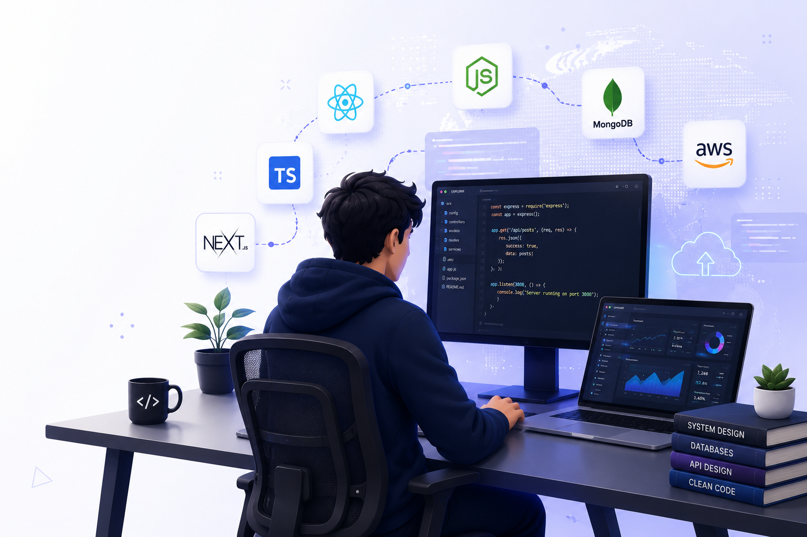

Best Full Stack Development Course in Indore


So you're in Indore, you're serious about building a tech career, and you keep hearing the term "full stack developer" thrown around like it's the golden ticket. Honestly? It kind of is.
The demand for full stack developers in India has exploded over the last few years, and Indore — the commercial heart of Madhya Pradesh — has quietly become one of the best cities in central India to learn and launch a tech career. With a thriving IT ecosystem, affordable living costs, and a growing number of quality training institutes, the timing couldn't be better.
But here's the problem most people face: there are too many options, and not all of them are worth your time or money. So in this complete guide, I'll walk you through everything you need to know about the best full stack developer course in Indore — what to look for, what to learn, and how to make the right choice.
Let's get into it.
What Is Full Stack Development? (And Why It Matters)
Before we talk about courses, let's quickly clear the air on what full stack development actually means. A full stack developer is someone who can work on both ends of a web application:
- Frontend (Client-Side): Everything the user sees and interacts with — buttons, layouts, animations. Technologies: HTML, CSS, JavaScript, React.js, etc.
- Backend (Server-Side): The logic that powers the app behind the scenes — databases, APIs, authentication. Technologies: Node.js, Express.js, Python, PHP, etc.
- Database Management: Storing and retrieving data efficiently using MySQL, MongoDB, PostgreSQL, etc.
Simply put, a full stack developer is a one-person army who can build a complete web application from scratch. That's why companies — from startups to MNCs — absolutely love hiring them.
Why Learn Full Stack Development in Indore?
Indore isn't just known for its poha-jalebi anymore. The city has grown into a legitimate tech hub, and here's why it makes sense to pursue your full stack developer training in Indore right here:
- Growing IT Sector: Companies like Infosys, TCS, and numerous startups have set up operations in Indore's Vijay Nagar and Scheme 78 tech corridors.
- Affordable Living: Compared to Pune, Bangalore, or Hyderabad, Indore offers a significantly lower cost of living, making it easier to invest in quality education.
- Local Job Opportunities: Post-training, you don't have to relocate immediately. Local hiring is growing fast.
- Strong Alumni Networks: Many training institutes in Indore have graduates placed in top companies, creating a strong referral culture.
- Quality Institutes: A number of reputed training centers have emerged in the city, offering industry-standard curriculum and mentorship.
What to Look for in the Best Full Stack Developer Course in Indore
Not every course deserves your attention. Before enrolling anywhere, run through this checklist:
✅ Curriculum That Covers Industry-Standard Technologies
The course should cover a modern tech stack. Look for programs that include HTML5, CSS3, Bootstrap, JavaScript (ES6+), React.js or Angular, Node.js + Express.js, MongoDB + MySQL, REST APIs, Git & GitHub, and deployment frameworks (AWS or Netlify).
✅ Hands-On Project Experience
Theory alone won't get you hired. The best programs make you build real projects — portfolio-worthy ones that you can show employers. Always verify project scale beforehand.
✅ Experienced Mentors and Faculty
The trainer matters more than the name of the school. Look for professionals with real engineering history, active code mentorship access, and small batch slots for personalized focus.
✅ Placement Support
A good institute puts its money where its mouth is when it comes to placements. Ask about their historical placement verification metrics, mock interviews, and regional industry connections inside Indore.
Full Stack Development Curriculum Breakdown
Here's what a comprehensive full stack developer training blueprint looks like module by module:
Web Development Fundamentals
HTML5 architecture and semantic structure, CSS3 layout engines (Flexbox, Grid), Bootstrap 5 responsive frameworks, and standard UI/UX design concepts.
JavaScript & DOM Manipulation
Core JavaScript logic variables, loops, object maps, ES6+ structural specifications (destructuring, dynamic arrow functions), DOM event trees, and asynchronous Fetch API handling.
React.js Frontend Architecture
Reusable component trees, state management architectures using hooks (useState, useEffect), multi-page routing paths with React Router, and backend communication workflows.
Backend Engineering with Node.js
Asynchronous runtime execution maps via npm, scalable RESTful API curation using Express.js frameworks, middleware systems, and encryption algorithms (JWT, bcrypt).
Database Systems Management
Document-store querying models with MongoDB & Mongoose schemas, SQL storage strategies via MySQL table indexing, normalization metrics, and structural join queries.
DevOps, Capstone & Interview Pipeline
Version control management via Git and GitHub pipelines, application cloud deployment strategies (AWS, Render), massive full-stack capstone assembly, and end-to-end placement readiness blocks.
Top Skills You'll Gain After the Course
- Build and deploy a complete web application independently from scratch.
- Write clean, scalable, decoupled code across both the frontend and backend.
- Design secure database schemas, run optimal queries, and trace data streams.
- Manage remote repositories effectively via Git tracking structures.
- Integrate diverse production-level third-party security APIs.
Career Opportunities & Salary Benchmarks
The current engineering job market is robust. Post-completion, you qualify for specialized roles like MERN Stack Engineer, Frontend Engineer, UI Developer, Core Systems Developer, or Freelance Software Consultant. Here is the realistic income trajectory structure:
| Experience Level | Average Annual Salary |
|---|---|
| Fresher (0–1 year) | ₹3.5 – ₹6 LPA |
| Mid-Level (1–3 years) | ₹6 – ₹12 LPA |
| Senior (3–5 years) | ₹12 – ₹22 LPA |
| Lead / System Architect (5+ years) | ₹22 LPA and above |
Online vs. Offline Learning Formats — Which Is Better?
Go Offline If: You need structured physical environments, routine lab accountability, faster hands-on whiteboard debug resolutions with mentors, and networking circles with peers.
Go Online If: You are actively juggling full-time jobs, require asynchronous schedule control limits, and want to eliminate daily travel commitments.
The sweet spot lies in selecting a hybrid model — ensuring the convenience of online learning blocks combined with standard in-person physical laboratory iterations.
Tips to Maximize Your Training ROI
- Write Code Every Single Day: Never wait for course deadlines. Ideate micro-projects early on during your training tracks.
- Maintain a Consistent Git History: Push updates to your GitHub profile regularly. Recruiters check green commit activity boards explicitly.
- Pace Your Technical Practice: Dedicate steady 90-minute blocks to deep programming logic to prevent early burnout phases.
Final Thoughts
Full stack development is one of the most versatile and rewarding career paths in tech today. And Indore, with its growing IT industry, lower cost of living, and quality training options, is genuinely a smart place to build that foundation.
Take your time, visit centers, interview engineering alumni, review curriculum details thoroughly, and execute choices cleanly. Your full stack engineering journey starts now. 🚀